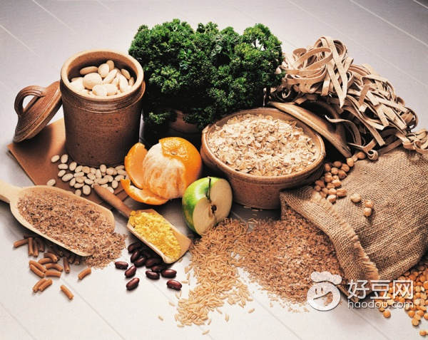

从营养角度出发, 粗粮是一座营养宝库, 其营养比细粮好。因此，多吃五谷杂粮，不仅能多摄入营养物质，还能减少富贵病的发生风险。

文 杨俊琴来源：《大众健康》从前的人们生活过于窘迫、贫寒，总希望可以吃的好点，精细点，所以对细粮格外追求，然而到了现代，我们的生活水平大大提高，精白米面早已成了家常便饭，而且也发现过于精细的粮食对身体没有想象中那样好，所以很多人又重新将五谷杂粮摆上了餐桌。你瞧，走进各大超市印入眼帘的都是“杂粮饼干”“紫米发糕”“荞麦面条”“玉米窝头”等等。可见吃粗杂粮现在已成了健康饮食的重要标志。也有不少的餐馆打起了“全粗粮”的招牌。可见，现代人的生活越来越好，也越来越讲究了。杂粮营养知多少一般来说，粗粮有两层含义：第一，主要是指除大米、白面这些细粮以外的谷类。包括全麦、糙米、小米、大黄米、高粱、大麦、燕麦、玉米、荞麦等；第二、也指加工精度低的米面。包括标准米、标准面。而杂粮，还要加上其他不属于谷类的食物，包括各种含淀粉的豆子，比如红豆、绿豆、各种芸豆、蚕豆、豌豆等。再广义一点的杂粮还包括其他含淀粉的种子，比如芡实、莲子之类药食两用的食材。通常，我们将其合二为一，称之为“粗杂粮”。 五谷杂粮中的营养丰富，主要含有膳食纤维、维生素和矿物质等。例如：玉米所含的膳食纤维比精米面高4～10倍，能加速肠道蠕动，减少便秘的风险，还能降低胆固醇的吸收，预防冠心病。还有大量的镁，可以加强肠壁蠕动，促进机体废物的排泄，对减肥有利；荞麦中蛋白质含量高于大米和玉米粉，且含有较多的赖氨酸，生物价较高，是一种完全蛋白。另外，还含有铬，临床上可用于糖尿病的营养治疗；小米中富含B族维生素、钾、铁、硒等，还有少量的胡萝卜素，有帮助眼睛抗衰老的作用。其中膳食纤维，性质柔软、易烹熟、口感好，在人体内的消化吸收率较高。食用杂粮好处多多杂粮对人体的好处很多，以下主要列举几个。第一、肠道顺畅：杂食中含膳食纤维丰富，可以促进肠道蠕动，若仅按膳食纤维的含量计算，1斤粗粮等于5斤水果，带硬皮的豆类纤维更多。因此吃粗粮豆类，可以调理肠道。第二、减轻体重：杂食由于膳食纤维的因素，使得我们需要较长的咀嚼时间，还能增加饱腹感。这样会在无形中减少对其它食物的摄入量。第三、抵抗污染：杂粮中的膳食纤维能与进入胃的多种污染物质相结合，将它们带出体外。尤其是杂豆，效果会更好，它能与不少致癌物结合，减少其吸收。合理食用 健康加倍1、粗细搭配如果每天单吃粗杂粮，不仅口感不好、难以下咽，而且还会影响一些营养素的吸收。但要是粗细粮混合食用或轮流食用不仅能改善口感，营养素也可以全面得以补充。比如，一餐中粗细粮可以做成一体的食物，像红豆小米粥、金银卷、八宝粥、玉米窝头等；也可这顿吃粗杂粮，下顿再吃细粮。当然还可今天不吃杂粮，明天再吃。当然也可以混合着吃。2、吃玉米棒别扔玉米胚 小时候吃鲜玉米棒，总是啃不净玉米轴上的白点，那白点太小，总被留在棒上。后来才知道那是玉米胚，其中含有维生素E、锌、优质蛋白、不饱和脂肪酸等营养成分，现在市面上有一种食用油名为“玉米胚芽油”，就是用这个白点制成的。因此以后大家吃玉米棒时也千万别扔玉米胚啊。3、淘米有讲究淘米的次数最好不要超过三次。可以视米表面的尘土而定。也不要流水淘米，不仅费水，还容易使水溶性维生素流失。不要热水淘米，为了减少热敏性营养素的丢失。正确的淘米方法是：将装有米的碗或盆中，接入水，用筷子轻轻搅拌两下，倒掉水，重复两三次即可。4、对于不易煮烂的粗粮，要浸泡一会儿对于一些不容易煮烂的，可以多在水里浸泡一会儿。比如煮八宝粥，先浸泡一段时间，再煮，不仅易熟而且省电。这是因为豆子的皮层较厚，淀粉结构紧密，很费时，但先泡一段时间，令皮层变软，淀粉吸水了，煮起来就会容易得多。5、吃粗杂粮的两大原则要多喝水。粗粮中的膳食纤维需要充足的水分做后盾，才能使纤维吸水膨胀，润滑肠道。循序渐进。吃粗杂粮一定要慢慢增加。对于平时以肉食为主的人来说，突然增加粗粮的进食量，容易引起肠道反应。为了帮助肠道适应，增加粗粮的摄入量时，应该循序渐进，不可操之过急。适量食用 心里有数中国营养学会推荐：健康成人每天应摄入谷类食物：250克到400克，也就是半斤八两。而其中粗杂粮为50克到100克，通俗讲是一两到二两。从营养角度出发, 粗粮是一座营养宝库, 其营养比细粮好。因此，多吃五谷杂粮，不仅能多摄入营养物质，还能减少富贵病的发生风险。